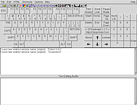

gtkeyboard
Archivierte Anleitung
Dieser Artikel wurde archiviert, da er - oder Teile daraus - nur noch unter einer älteren Ubuntu-Version nutzbar ist. Diese Anleitung wird vom Wiki-Team weder auf Richtigkeit überprüft noch anderweitig gepflegt. Zusätzlich wurde der Artikel für weitere Änderungen gesperrt.
Zum Verständnis dieses Artikels sind folgende Seiten hilfreich:
 GTKeyboard
GTKeyboard  ist eine flexible Bildschirmtastatur. Mit dem Mauszeiger wird das Drücken von Tasten emuliert. Das Programm bietet zusätzlich zu einer Shortcutfunktion schnellen Zugriff auf HTML-Syntaxelemente.
ist eine flexible Bildschirmtastatur. Mit dem Mauszeiger wird das Drücken von Tasten emuliert. Das Programm bietet zusätzlich zu einer Shortcutfunktion schnellen Zugriff auf HTML-Syntaxelemente.
|  |
| GTKeyboard |
Installation¶
Das Programm kann über die Paketverwaltung installiert [1] werden
gtkeyboard (universe, [2])
Benutzung¶
GTKeyboard leitet die Ausgabe in das gewählte Fenster um. Ist kein Fenster gewählt, wird der Text in einem Textfeld unterhalb der Tastatur dargestellt, von wo aus er dann in das gewünschte Fenster kopiert werden kann.
Fenster wählen¶
Zum Fensterwählen gibt es zwei verschiedene Modi, den impliziten und den expliziten. Im standardmäßig aktiven impliziten Modus wird als Ausgabeziel immer das Fenster gewählt, das zuletzt den Fokus bekommen hat, z.B. durch einen Mausklick. Im expliziten Modus muss erst "Options -> Redirect to a Window" gewählt oder alternativ der Button mit dem Kreuz unter der Menüzeile gewählt und dann auf das gewünschte Fenster geklickt werden.
Shortcuts¶
Es können sowohl die schon bereitgestellten Shortcuts als auch selbsterstellte genutzt werden. So können sogar häufig benutzte Sätze über einen Klick zugegriffen werden. Auch diese Funktion ist sowohl über ein Menü, nämlich "Shortcuts", als auch über die Buttons unterhalb der Menüzeile erreichbar.
Benutzerdefiniert¶
Eigene Abkürzungen können über "Options -> Define Shortcut" angelegt werden. In de erscheinenden Fenster kann dann in das jeweilige Textfeld der Text eingegeben werden, der später per Knopdruck erscheinen soll.
Konfiguration¶
GTKeyboard kann vielfältig angepasst werden.
Standardmodus¶
Der Modus kann unter "Options -> Redirection" angepasst werden.
Tastaturlayout¶
Um das Tastaturlayout umzustellen kann man die mitinstallierten Layouts bemühen. Hierfür wählt man "Options -> Choose a Layout File" und navigiert in den Ordner /usr/share/gtkeyboard/key. Allerdings sollte man sich in /usr/share/gtkeyboard/ schon befinden, es wäre dann also nur key und in diesem Ordner dann z.B. die DE.key auszuwählen.
Farben¶
Nicht vergessen sollte man die Möglichkeit, die Farbe der Programmoberfläche anzupassen, beispielsweise um den Kontras zu erhöhen. Dies geht den Farbauswahlbutton oder per "Options -> Looks -> Colors -> Set Colors".
Problembehebung¶
Programm X erhält keinen Text¶
Einige Programme lassen sich nur im expliziten Modus auswählen, andere gar nicht.
Xterm erhält keinen Text¶
Damit Xterm mit GTKeyboard zusammenarbeitet muss zuerst per
Strg und einem  Linkslick das Menü geöffnet und dort "Allow SendEvents" aktiviert werden.
Linkslick das Menü geöffnet und dort "Allow SendEvents" aktiviert werden.
- Erstellt mit Inyoka
-
 2004 – 2017 ubuntuusers.de • Einige Rechte vorbehalten
2004 – 2017 ubuntuusers.de • Einige Rechte vorbehalten
Lizenz • Kontakt • Datenschutz • Impressum • Serverstatus -
Serverhousing gespendet von